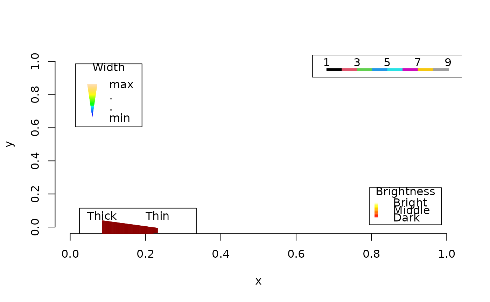

Prints an annotated vertical bar coloured according to a continuous palette.
SpectrumLegend(
x0 = 0.05,
y0 = 0.05,
x1 = x0,
y1 = y0 + 0.2,
absolute = FALSE,
legend = character(0),
palette,
lwd = 4,
lty = 1,
lend = "square",
cex = 1,
text.col = par("col"),
font = NULL,
text.font = font,
title = NULL,
title.col = text.col[1],
title.cex = cex[1],
title.adj = 0.5,
title.font = text.font[1],
pos = 4,
...
)
SizeLegend(
x0 = 0.05,
y0 = 0.05,
x1 = x0,
y1 = y0 + 0.2,
absolute = FALSE,
legend = character(0),
width = c(0, 1),
scale = c("pch", "lwd"),
lend = "square",
cex = 1,
col = par("col"),
text.col = par("col"),
font = NULL,
text.font = font,
title = NULL,
title.col = text.col[1],
title.cex = cex[1],
title.adj = 0.5,
title.font = text.font[1],
pos = 4,
...
)Coordinates of the bottom-left and top-right end of the bar.
Logical specifying whether x and y values denote
coordinates (TRUE) or relative position, where (0, 0) denotes the
bottom-left of the plot area and (1, 1) the top right.
Character vector with which to label points on palette.
Colour palette to depict.
Additional parameters to segments(),
controlling line style.
Character expansion factor relative to current par("cex").
Colour used for the legend text.
Font used for the legend text; see text().
Text to display
Colour for title; defaults to text.col[1].
Expansion factor(s) for the title, defaults to cex[1].
Horizontal adjustment for title: see the help for
par("adj").
Font used for the legend title.
Additional parameters to text().
Vector of length two specifying width of legend bar at base and top.
Character string specifying whether width = 1 corresponds to: "pch", the size of a plotting symbol with pch = 1; "lwd", the width of a line with lwd = 1.
Colour used for the width bar.
This convenience function is not yet very customizable; do file a GitHub issue if you would value additional functionality.
plot(0:1, 0:1, type = "n", frame.plot = FALSE,
xlab = "x", ylab = "y")
SpectrumLegend(legend = c("Dark", "Middle", "Bright"),
palette = hcl.colors(32L), lwd = 5,
title = "Brightness")
SpectrumLegend(0.4, 0.95, 0.9, 0.95, abs = TRUE,
legend = seq(1, 9, by = 2), palette = 1:8, pos = 1)
SizeLegend(0.8, title = "Width", legend = c("min", "max"))
